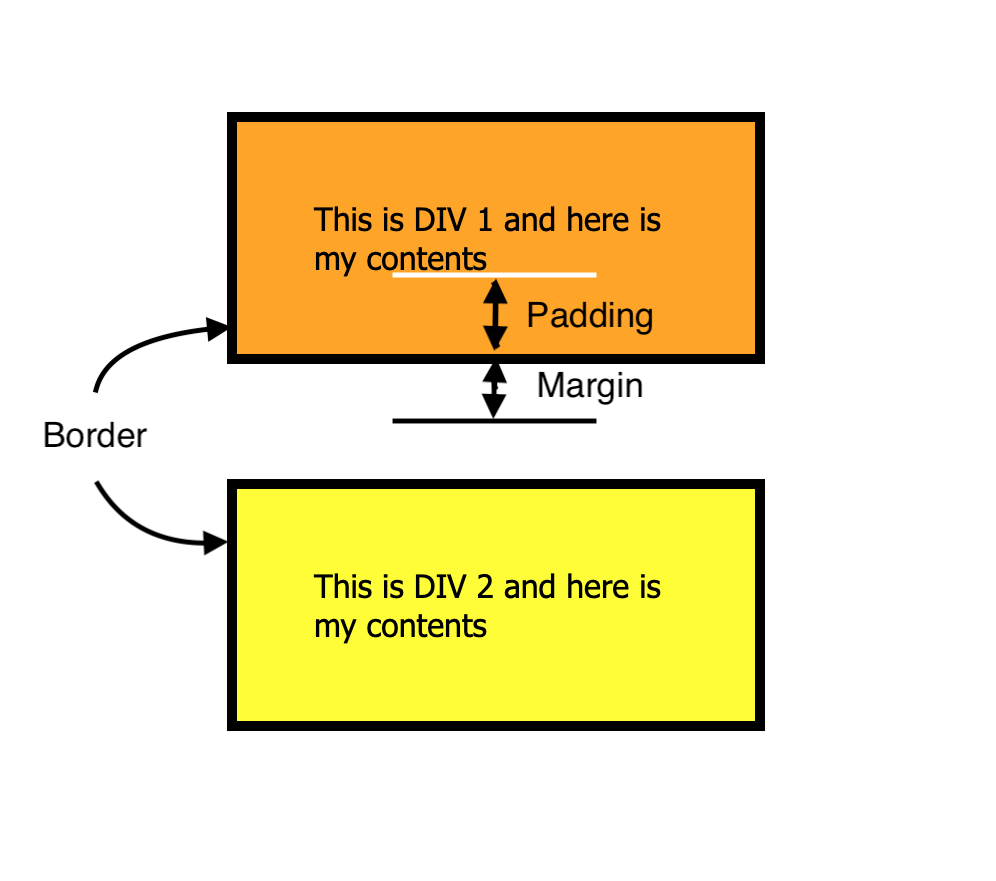

Margin is the space outside the element, padding is the space inside the element surrounding the contents, and the border is in between the two surrounding the element.
When the margin becomes negative, it enlarges the element, stretching it to fill the empty space. The last element dominates the earlier one.

Nothing, a negative padding is the same as zero padding.
Back to main